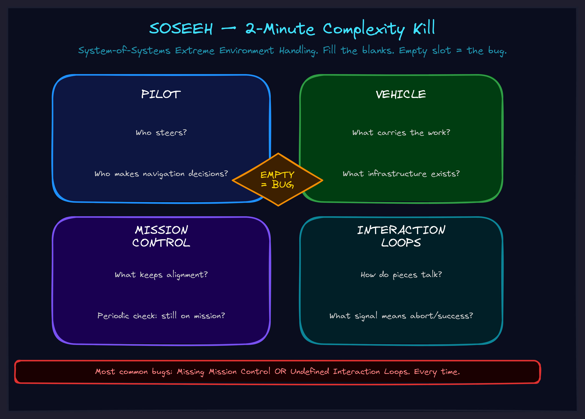

May 2026Naming & vocabularyThe operator
SOSEEH: The 2-Minute Complexity Kill
When your brain white-screens on a complex system, there's a diagnostic trick that works every time. Four questions. Two minutes. The missing piece shows itself.

The White-Screen Problem
You open the project. You stare at it. Your brain slides off. You tab to YouTube. You hate yourself. You tab back. You stare again. Nothing sticks.
That's not laziness. That's cognitive heat — your mind under complexity load. When there are too many moving parts, too many failure modes, too many interdependencies, your working memory literally cannot hold the shape of the thing. So it white-screens. Like a browser tab that ran out of RAM.
The instinct is to push harder. Read more docs. Draw more diagrams. Add more detail. But detail isn't the problem. The problem is you don't have a decomposition — a way to break the blob into pieces your brain can actually hold.
Without that, you're trying to swallow an elephant whole. No amount of chewing harder helps.
What Actually Happened
I was drowning in my own agent architecture. The system had grown into something I couldn't hold in my head anymore. I couldn't even articulate what was wrong to my AI copilot because I didn't have words for it.
Then I noticed something weird: I was binge-watching content about extreme environments. Everest expeditions. U2 reconnaissance flights. Wingsuit jumps. Fighter jet missions.
Not for entertainment. My brain was reaching for analogies — collecting examples of humans operating in complex, high-stakes coordination environments, because those examples felt like my situation. The catharsis wasn't the content. It was the pattern recognition happening underneath.
My mind was bundling all that stuff... I wondered if it was trying to assemble the ontology without me.
That's the moment I caught it. Not the content of the reach — the fact that reaching was happening. My subconscious was sorting the climber from the equipment from the base camp coordinator. Like sorting cards by suit without naming the suits yet.
So I did something simple: I fed three of those examples to an AI and asked "what structure do these share?"
The AI triangulated instantly:
One human doing something 'simple' on top of a ridiculous amount of invisible infrastructure.
And from nine overlapping categories, the whole thing collapsed to four:
1. PILOT — who makes the moment-to-moment navigation decisions 2. VEHICLE — what carries the pilot through the environment 3. MISSION CTRL — whatever keeps pilot + vehicle aligned with the actual mission 4. INTERACTION — how do the pieces talk to each other
That's SOSEEH. System-of-Systems Extreme Environment Handling. Four boxes, three loops. Done.
Why This Works
SOSEEH works because complexity anxiety is almost never about "I don't understand the parts." It's about "I can't see which part is broken."
When everything feels like a blob, the real problem is usually one of four things:
1. You don't know who the Pilot is
Nobody is steering. Or three people are steering. Or the AI is steering when you should be. If you can't point to the thing making navigation decisions, that's the bug.
2. The Vehicle is undefined
You don't know what your actual infrastructure is. What tools, what agents, what systems are carrying you through the work? If you can't describe the vehicle, you can't maintain it.
3. Mission Control is missing
This is the most common failure. Nothing is periodically checking "are we still on mission?" The pilot and vehicle are running, but nobody is asking whether they're running toward the right thing. Projects drift because Mission Control was never installed.
4. Interaction Loops are undefined
The pieces exist but they don't know how to talk to each other. When does the AI report? When do you redirect? What signal means "abort"? Undefined loops are where coordination breaks silently.
When something feels wrong, map it to these four. The answer is almost always "Mission Control is missing" or "this Interaction Loop is undefined." Fix the missing piece. The drift stops.
The 2-Minute Diagnostic
Fill in the blanks:
Pilot = ___ (who's steering?) Vehicle = ___ (what carries the work?) Mission Control = ___ (what keeps alignment?) Interaction Loops = ___ (how do pieces talk?)
If any blank feels weird or empty — that's the bug.
Not "that might be the bug." That is the bug. The slot that doesn't have a clear answer is the slot that's causing the drift, the confusion, the white-screen. Every time.
Three Places This Applies
SOSEEH isn't just for software systems. It works anywhere coordination happens under complexity pressure.
Your business
The business environment is the extreme environment. Your team, tools, and processes are the Vehicle. You (or your leadership team) are the Pilot. Your standups, reviews, and dashboards are Mission Control. Your reporting cadence, escalation paths, and feedback loops are the Interaction Loops.
When the business feels chaotic: which of these four is broken? Usually it's Mission Control — nobody is checking "are we still building toward the right thing?" — or the Interaction Loops — information isn't flowing between the right people at the right time.
Your AI agent system
The AI's meaning-space is the extreme environment. The model architecture is the Vehicle. The inference process is the Pilot. Your evaluation and feedback mechanisms are Mission Control. Prompt-in, response-out, tool-calls are the Interaction Loops.
When your AI agent drifts: it's almost always a Mission Control problem. Nothing is periodically asking "is this agent still doing what we told it to do?" Add a check-in every N steps. Drift stops.
Your life
Your lifeworld — health, money, relationships, time — is the extreme environment. Your body, habits, tools, and living situation are the Vehicle. You are the Pilot. Your daily review practice (or lack of it) is Mission Control. How you switch between life domains is the Interaction Loop.
When life feels overwhelming: usually Mission Control (no daily review keeping you aligned) or Vehicle (your infrastructure can't carry the load you're putting on it).
Give It to an AI
This isn't a trick prompt. It's a lens that makes certain questions cheap to ask.
Paste SOSEEH's four categories into any AI conversation. The AI starts spontaneously asking: "Who's the pilot here?" "What's mission control?" — without being prompted. The lens works because it gives the AI (and you) a shared decomposition vocabulary.
One client pasted SOSEEH into their agent conversation and within 10 minutes had identified that their entire agent architecture was missing Mission Control. Three people were steering (Pilot confusion), nobody was checking alignment (no Mission Control), and the reporting cadence was ad hoc (undefined Interaction Loops). The fix took an afternoon. The chaos had been there for months.
The Deeper Pattern
SOSEEH was built using a method called Allegorization Compiling — stack analogies from different domains, feed them to an AI, triangulate the universal structure, validate intuitively. If you want to build your own cognitive equipment for different problem types, that method is available in the frameworks library.
The deeper insight isn't the four categories. It's that your brain was already reaching for this decomposition. The anxiety you feel when staring at a complex system isn't random. It's your subconscious trying to sort the blob into pieces it can hold. SOSEEH just gives those pieces names.
Once you have the names, the blob becomes a diagnosis. And diagnoses are solvable.
Blob anxiety → decomposition → missing piece → fix. Two minutes.
Try It Now
Think of the most complex thing on your plate right now. The thing that makes your brain slide off when you try to think about it.
Ask yourself four questions:
1. Who's the pilot? 2. What's the vehicle? 3. Where's mission control? 4. What are the interaction loops?
If you got a clear answer to all four — great, you know your system. If one felt empty or weird — you just found the bug. Go fix that.
If you want help mapping SOSEEH to your specific system — business, AI agents, or life architecture — book a call. We'll do the 2-minute diagnostic live and you'll leave with an actual plan.
Or browse the full frameworks library for more cognitive equipment like this.